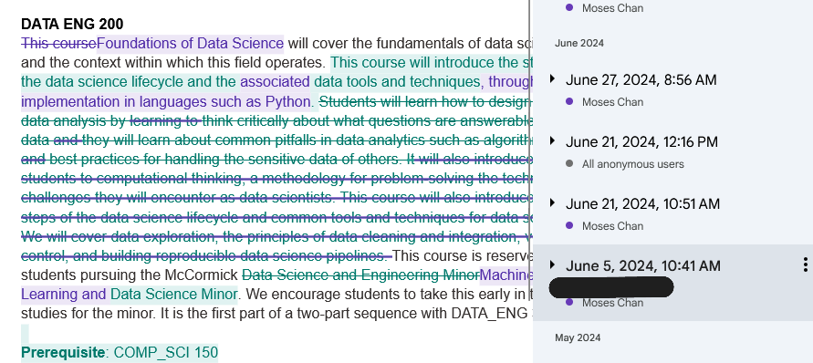
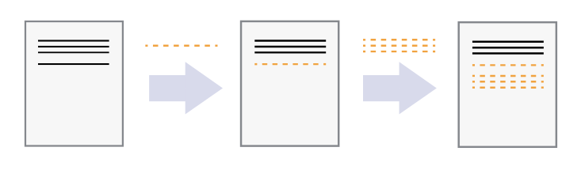
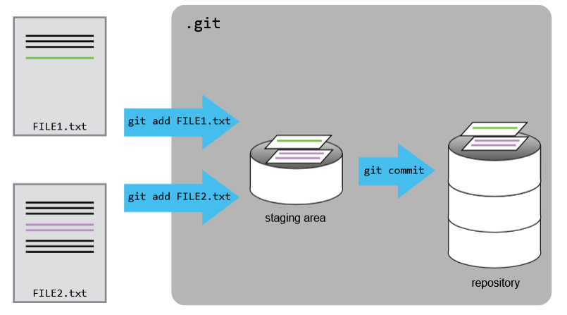
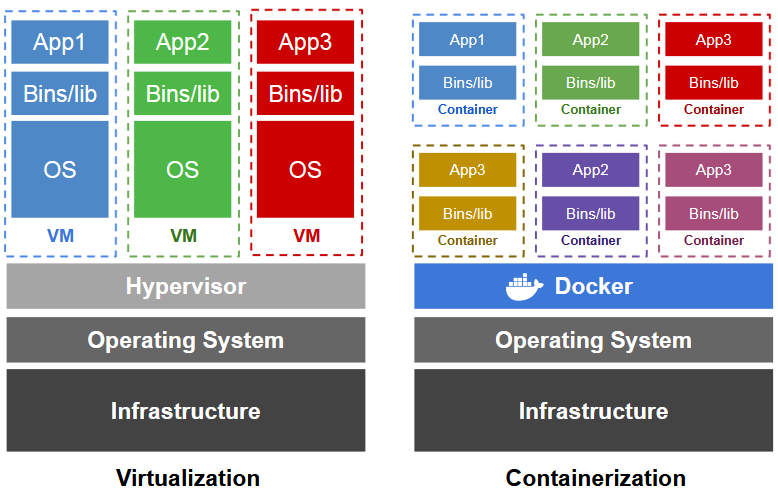
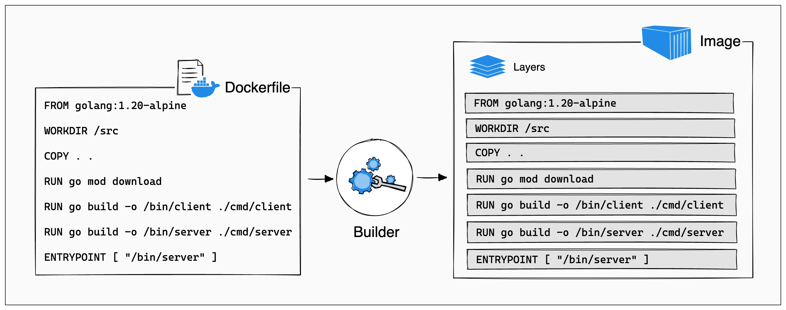
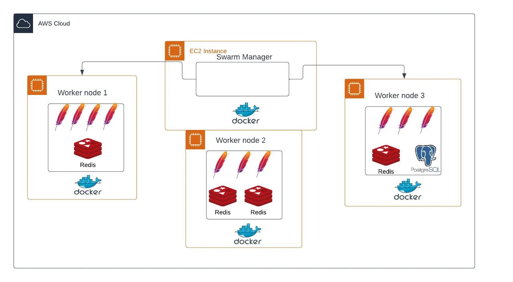

Standard code communications#
In our class, we introduce the usage of several communication tools regarding code and script development.
This document covers an introduction of
Version control tools (git/Github)
Containerization (Docker)
Version control#
|
|---|
“Final”.doc (www.phdcomics.com) |

What is version control?
The whole idea behind any version control system is to
store “safe” copies of a project so that you never have to
worry about irreparably breaking your code base. (bitbucket.org)
Main reasons for version control:
Track changes in any text documents (e.g., source code, documentation, LaTeX-based writing)
Auto backups of your work
Coding safety net
What functionality makes a good version control system?
A good version control system:
Will store many versions of your files
Will let you “revert” a file (or a part of a file) to an older version
Will track the order of different versions
Will ensure each “version” is neither too big nor too small
A great version control system:
Will let you collaborate on files with other people
Will help you combine different (branched) versions of the files produced by different people working independently
Analogue (Google docs)
 |
|---|
Google doc as version control example |
Git#
Git is a piece of software that enables the functionality we speak of above.
How git works?#
 |
|---|
How git tracks changes in a file |
Git tracks changes to a file (or multiple files) through snapshots, or commits, or revisions.
All snapshots are stored in a repository which contains a history of all changes to the files.
|
|---|
Putting code into git |

Adding files for tracking (git add)#
 |
|---|
Adding files to git |
Ignoring files from being tracked (.gitignore)#
Not all files in your local directory are needed for reproduction of results.
One rule of thumb is to exclude files that are a product of your code, for examples:
PDFs
graphs produced by executing code
compiled code
system files (e.g.,
.DS_Store)
We can add a file called .gitignore to the repository and let Git do the rest.
The .gitignore file looks like:
.DS_Store
*.pdf
*.png
*.jpg
.
.
.
Confirming changes (git commit)#
git commit -m 'your commit message' sends all the “staged” changes to make a snapshot.
Always write meaningful commits, so that the future you will not struggle and succumb into frustrations.
Sending changes to repository (git push)#
git push will send all committed changes to the repository.
At this point, your local directory and your repository are in sync.
Retrieving changes from repository (git pull)#
git pull will attempt to retrieve all changes from your last “local” version to the most current repository version.
This is especially useful when you collaborate with other developers (and/or yourself across machines.)
Collaborating using git#
|
|---|
Schema for collaborating with git |

Containerization#
Containerization is one way to develop, train, and deploy software without having to worry (too much) about compatibility.
Why do we need containerization?
 |
|---|
Comparison of virtual machines and containers |
What functionality makes a good container?
A container is:
Portable and lightweight
Fully packaged software with all dependencies included
Can be used for development, training, and deployment
Development teams can easily share containers
How does a Docker container run?#
The Dockerfile contains all instructions to build a Docker image.
Running the Docker Image returns a Docker container.
|
|---|
Constructing a Docker container |

Analogue:
An image is like a recipe, following the recipe gives you a dish (the container).
An image is like a Python class, and the container is an instance of that class.
Dockerfile (The instructions)#
FROM python:3.12 ## FROM specifies the base image (where to start building)
WORKDIR /usr/local/app ## WORKDIR specifies where to execute any commands
# Install the application dependencies
COPY requirements.txt ./ ## COPY files into image
RUN pip install --no-cache-dir -r requirements.txt ## RUN command, installs the dependencites from requirements.txt
# Copy in the source code
COPY src ./src ## COPY app source codes into image
EXPOSE 5000 ## EXPOSE specifies which channel to communicate from local to image
# Setup an app user so the container doesn't run as the root user
RUN useradd app ## RUN command to add user "app"
USER app ## USER switches user to "app" instead of running code from root
# Open a web server for Python
CMD ["uvicorn", "app.main:app", "--host", "0.0.0.0", "--port", "8080"]} ## CMD specifies the default command to be run by a container
Docker Image (Layering of instructions)#
 |
|---|
Layering of instructions in Docker image |
Docker container in AWS EC2 instance#
 |
|---|
Container usage examples in AWS EC2 instances |